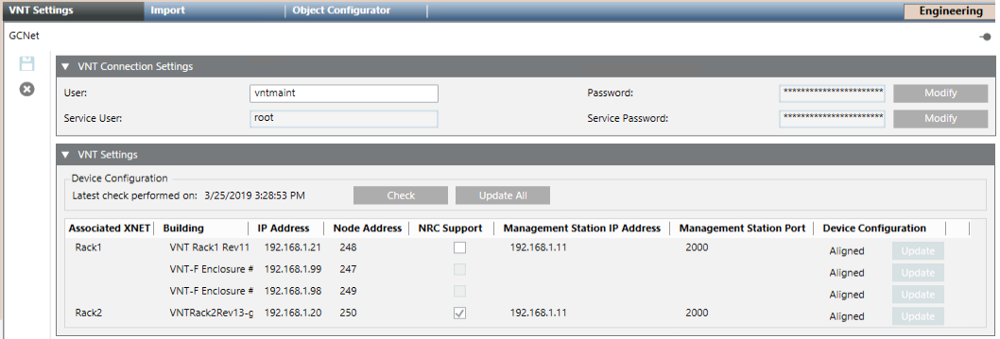
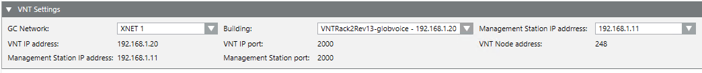

VNT Configuration in GCNET
GCNET Network
This section provides some reference information about the VNT configuration in GCNET networks. The campus-wide Galactic Control Network (GCNET) provides the IP communication infrastructure for multiple XNETs via Virtual Network Tunneling (VNT) devices. The fire networks can include Desigo Fire Safety Modular and Cerberus Pro Modular fire control panels, while FireFinder XLS and MXL fire control panels are not supported. The GCNET also supports fire control as well as paging and voice control on Fire Command Center (FCC) panels.
For a step-by-step guide to the GCNET network configuration workflow, see Configuring a GCNET Fire Network.
VNT Settings for GCNET
In Engineering mode, the GCNET node, after importing the configuration, provides two expanders in the VNT Settings tab:
- VNT Connection Settings, to set the access credentials as defined in the VNT configuration:
- User and Password for data transfer.
- Password for VNT service user.
- VNT Settings, to show a global view of the VNT and FCC devices, and allows for downloading them with the device configuration.
The VNT Settings expander includes:
- Date of last device configuration check.
- Pushbuttons to Check and Update All (download) devices.
- A table that provides the following information for VTN and FCC devices:
- Associated XNET (read-only): XNET connected to each VNT device.
- Building (read-only): Names of VNT and FCC devices.
- IP address (read-only): IP network addresses.
- Node address (read-only): XNET network addresses.
- NRC Support: Select this check box if a Network Ring Card (NRC) is used.
- Management Station IP address (read-only): Management station IP address for VNT communication.
- Management Station Port: Use this field to modify the management station port for VNT communication.
- Device Configuration: Status (
Unknown,Checking,Unreachable,Aligned, Outdated,Updating) and Update (download) button.

VNT Settings for XNET
In Engineering mode, the XNET tab of XNET networks associated to a driver via VNT, provides the VNT Settings expander to configure and show the VNT parameters.
The VNT Settings expander includes:
- GC Network: Select the GCNET to which the XNET belongs.
- Building: Select the VNT that connects to the XNET.
- Management Station IP address: Select the management station (IP address) that connects to the VNT via a fiber ring network router.
- VNT IP address (read-only): VNT address taken from the imported configuration.
- VNT IP port (read-only): Default VNT IP port.
- VNT Node address (read-only): VNT address in GCNET taken from the imported configuration.
- Management Station IP address (read-only): Station IP address, as selected above.
- Management Station port (read-only): Station IP port, as defined by VNT Settings for the GCNET.
